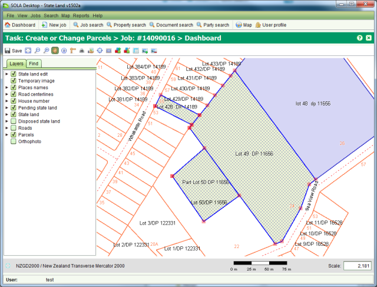

The Parcel Map Editor screen allows you to map a new state land parcel and/or edit the shape
of existing state land parcels. You can also use the Parcel Map Editor to change state land
parcel information such as land use, area, description and locality details. To access
the Parcel Map Editor you must  Start a Create or Change Parcels task from the Job Details
Task tab.
Start a Create or Change Parcels task from the Job Details
Task tab.

Parcel Map Editor with three new state land parcels
The Parcel Map Editor screen extends the SOLA Map Viewer with additional tools to aid spatial editing of parcels. The additional tools provided are
|
|
|
|
|
|
|
|
|
|
|
|
The edits you make using the Parcel Map Editor are not saved automatically. You must
regularly  Save your changes otherwise they can
be lost.
Save your changes otherwise they can
be lost.
When the Parcel Map Editor opens it will automatically zoom to the location of the parcels
linked to the job. If you zoom or pan the map away from this location, you can use the Zoom
to Job tool  to quickly
reposition the map back over the job area.
to quickly
reposition the map back over the job area.